Genre is an attempt to discretize and categorize the totality of all content and media. And while this process of taxonomy and naming usually suggests the trappings of epistemic domineering, I also believe that the use of alternative, more arbitrarily constructed taxonomies can become a useful basis for poetics. When I utilize genre specificity in my work, I tend to isolate or strip down the genre into essential tropes, and then attempt to twist those tropes in some way so as to tack on additional, unexpected meaning. Genre is culturaly specific. The genres a society decides to codify reveal something about the values of that society.
I think of the horror genre and how horror movies can often act as symbolic allegory for collective historical trauma and cultural anxiety. I think of the Western genre and think of its function as codifying Western colonial fantasies: a desire for freedom, for frontiers, for land and resources. Science Fiction: collective anxieties about the future, about biopolitics, about invasion and powerlessness. European colonization of the Americas was the original alien invasion, and to me many sci-fi plots that have to do with the trope of invasion point to some sort of white/western anxiety of having their historical ‘sins’ reproduced back to them. Its a function of white guilt. Because mainstream American society is generally white, the tropes within the genres we talk about in our media reflect that dominance. It is exciting to me, then, when that structure is subverted by people who aren’t white or male or cis or straight. The most recent high-profile example I can think of is Jordan Peele’s “Get Out,” which recasts white middle-class liberal identity as terrifyingly grotesque. Within science fiction, there are movements like Afrofuturism, Asian-futurism, and Indiginous futurisms that actively try to de-center Western subjectivity within future-making.
So what about pop-music, as a genre?
The more I think about it, the more paradoxical it seems:
Just 'popular' music?
A mash-up of other genres in a way that reveals public taste?
It's own definable sound?
Thoughts on Pop Music
How / Why is pop music allowed to convey [concepts, feelings] so poignantly, despite using what can often be incredibly simple or banal lyrics?
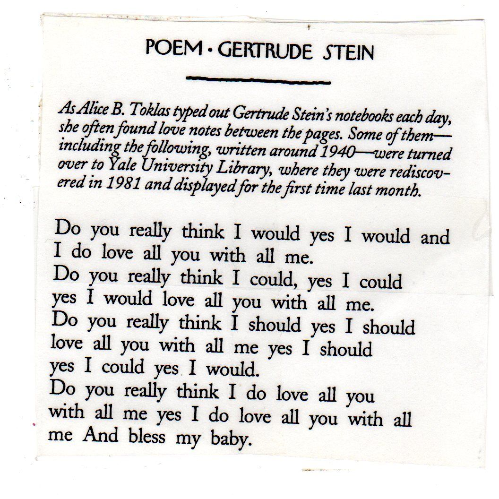
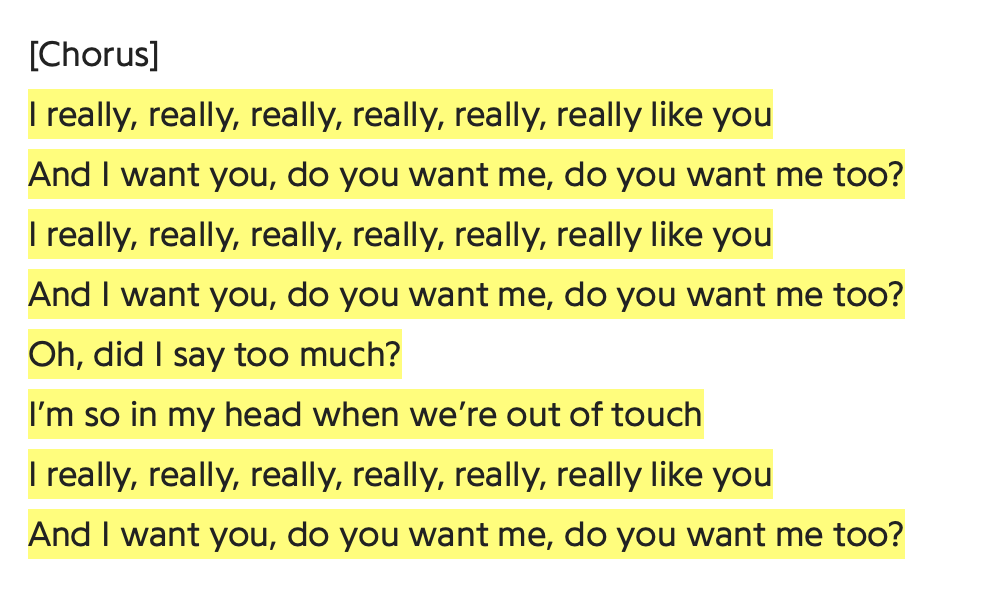
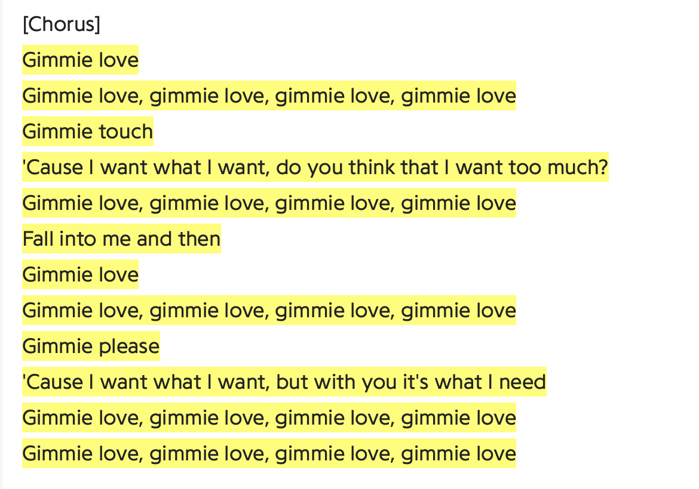
“I think it’s because the voice is more than the words being sung. There’s so much more information encoded in a song than just what’s being conveyed through lyricism.” At this point, I got up, and we continued down the hill. “And encoding it in ways that we aren’t exactly conscious of. It’s more like, absorbed. We feel these things rather than hearing them. But we are always listening. The way that a singer pronounces the words, the prosody, the shape of their mouth, the timbre of their voice, the instrumentation, the reverb, the harmonies, the frequencies … And we absorb it all like a sponge.”
We reached a crosswalk and stopped. You fell silent, the moment overtaken by the rumbling and screeching of cars. When the light turned red and we crossed the street, you turned towards me again.
“Like, there are probably a thousand different ways to say ‘I love you,’ just like there are a thousand different ways to write a love song.” You paused again, drawing in a deep breath. “I sometimes wonder, you know how the vast majority of songs are about love? Is that proof of its singular importance in life? Like, is love really all there is? Is that it? Love and the various pains that orbit around it?”
What is this 'feeling'?
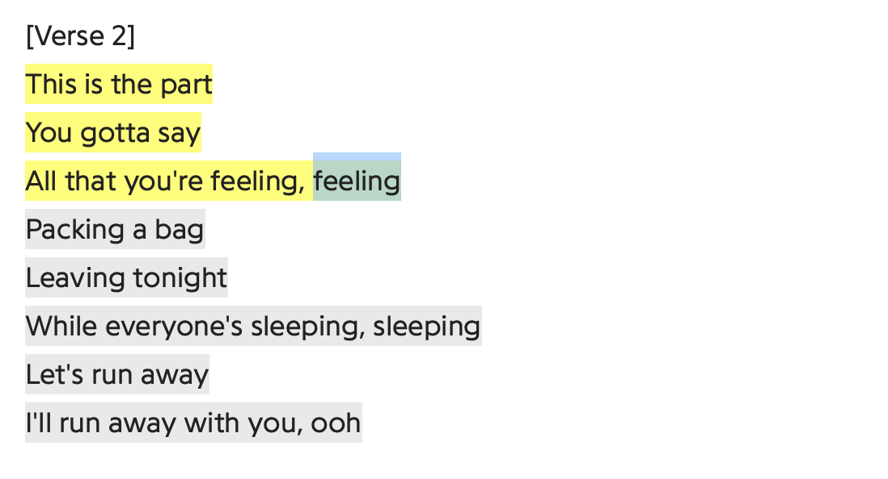
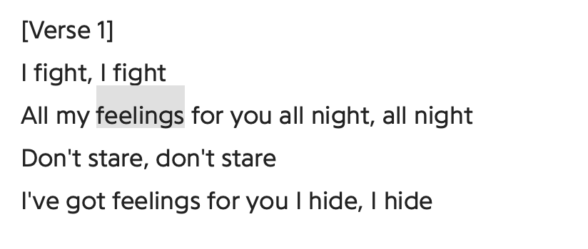
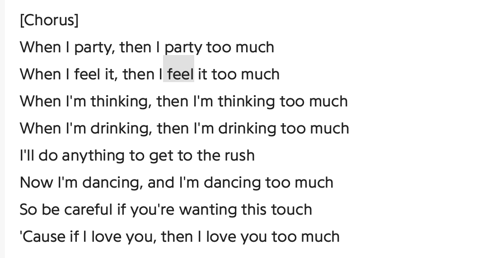
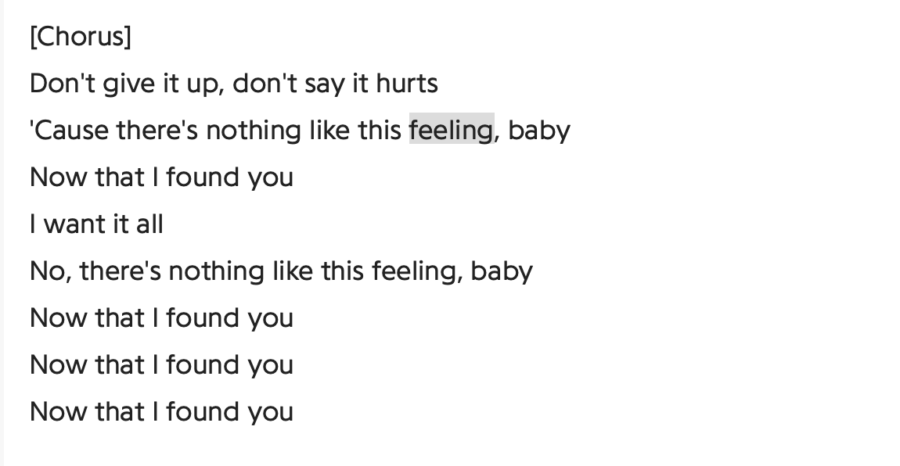
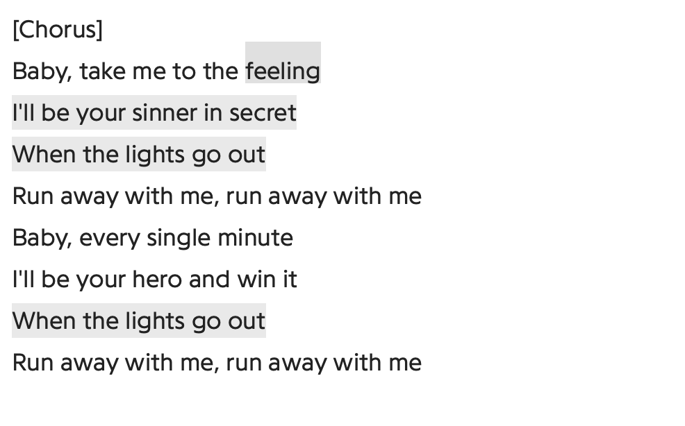
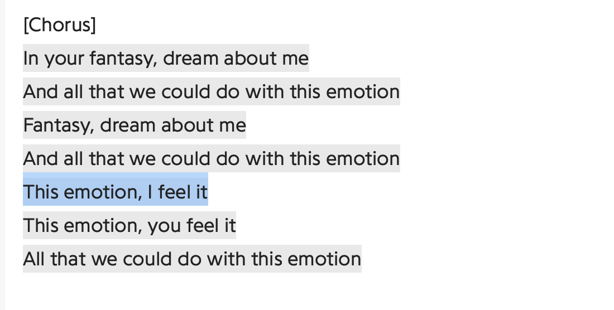
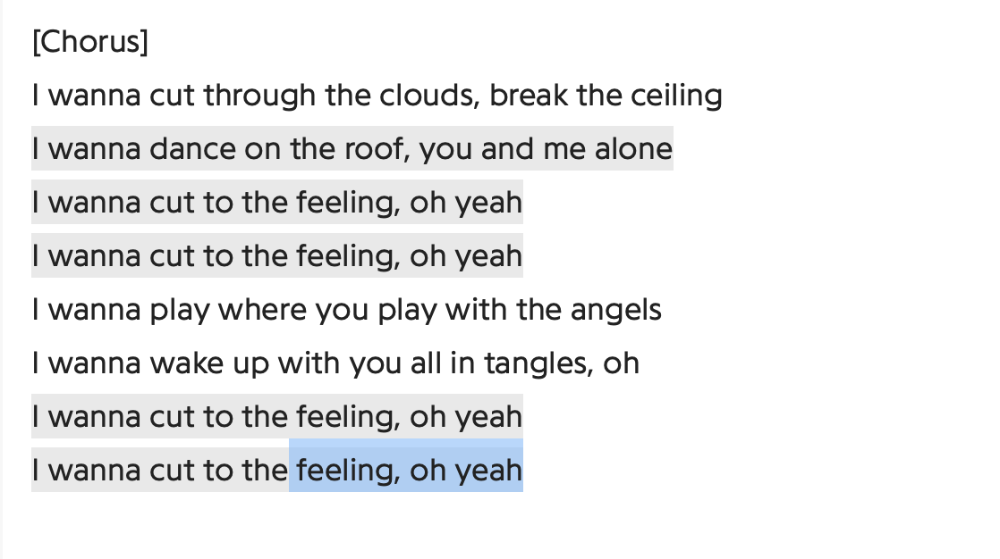
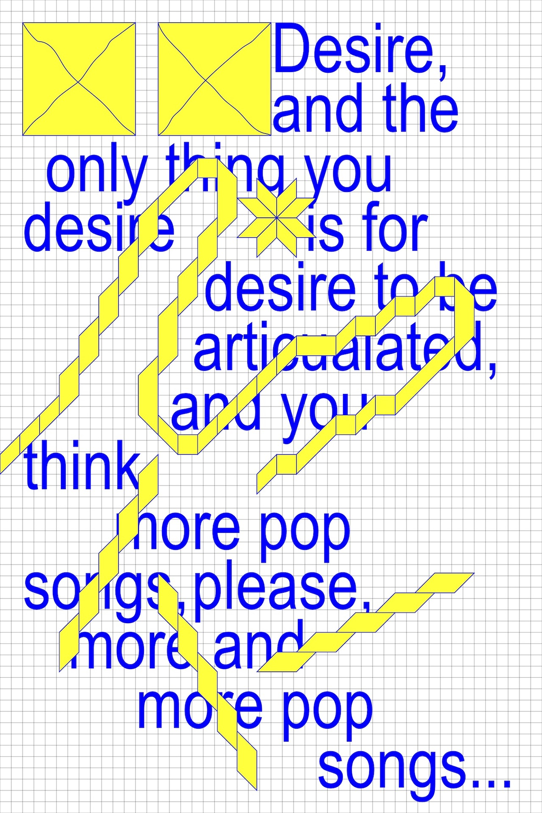
It's been said that pop music desires a body — a single, focused human form as an object of interest. Emotion fails in this, I suppose, because its primary characters are desire and distance. Want may be a machine that lurches us toward a newer, more eager want, but the idea alone, pointing at nothing specific, doesn’t sell records. This is one theory as to why Carly Rae Jepsen, despite her ability to home in on a feeling and make it flourish, isn’t the biggest pop star in the world. But I’m not really interested anymore in why Emotion didn’t sell a million copies, because I don’t care about how an album sells as much as I care about how an album lives. And if that sounds overwrought or too emotional then by all means keep your numbers, and I’ll keep my small escapes into a place a slight touch better than the actual place I’m in.
Emotion is an album that still, even more than a year after its release, makes you feel good. When Carly Rae Jepsen launches into "Boy Problems," complete with her mostly shoulders dance moves, people spill out of their seats in the front row, dancing close to the stage while she points at them and grins. When she plays the inevitable “Call Me Maybe,” which, even though I’m weary of it, sounds incredible with the string arrangement crafted to hold it, her own voice is drowned out by the teeming masses howling out each line.
--Hanif Abdurraqib, Carly Rae Jepsen and the Kingdom of Desire (MTV.com)